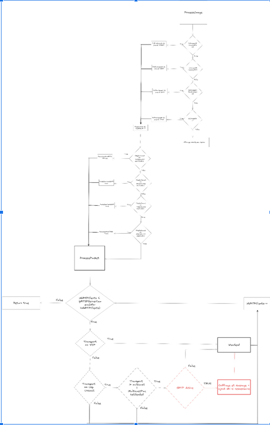

Bilan des apprentissages réalisés au semestre 5
Information générales
Diplôme préparaé : BUT informatique DACS
Établissement : IUT de Montpellier-Sète
Alternance : ActiaTelecom 23/10/2023
Activités réalisées :
Projet 1
Durant mon alternance, j'ai travaillé sur le logiciel Visiospace d’ActiaTelecom, centré sur la vidéo protection. Ce logiciel gérait de nombreux flux vidéo non chiffrés avant mon arrivée. J'ai développé un module lié aux protocoles réseaux MIKEY et SRTP pendant mon stage précédent. Pour intégrer ces fonctionnalités dans Visiospace, j'ai dû reprendre et mettre à niveau ce travail, le soumettre à des tests avant son intégration future dans le logiciel.
Activité 1
La première activité a été une refonte complète du code ainsi que de sa documentation, qui était jusqu'alors inexistante, et une optimisation de l'utilisation de la mémoire par le module.
Composantes essentielles liées a ce projet :
CE 3.02 | en offrant une qualité de service optimale
Niveau estimé : Expertise
Trace : Ci dessous une capture d'écran de quatre camera fonctionnent avec mon module et une bonne qualité d'images par seconde
CE 1.03 | en appliquant les principes algorithmiques
Niveau estimé : Maitrise
Trace : Ci dessous un algorithme d'encryption efficient en C++
CE 1.04 | en veillant à la qualité du code et à sa documentation
Niveau estimé : Expertise
Trace : Ci dessous diagramme de la procedure d'encryption des paquets dans le logiciel

CE 1.06 | en choisissant les ressources techniques appropriées
Niveau estimé : Maitrise
Trace : Utilisation de OpenSSLWiki et des rfc 4567,3830 et 3711 durant toute la conception du module pour respect des normes.
Apprentissages critiques liées a ce projet :
AC 31.02 | Faire évoluer une application existante
Niveau estimé : Expertise
Trace : Ci dessous mes fichiers modules au sein du dossier tools du logiciel VisioSpace
Activité 2
Une fois le code propre et la documentation assimilée par toute l’équipe R&D, il était temps pour moi d'entamer l'intégration dans le logiciel. J'ai donc procédé à l'intégration de mon module dans la solution existante, ce qui m'a nécessité de comprendre le fonctionnement de tous les modules avec lesquels je devais interagir pour intégrer ma solution au logiciel.
Composantes essentielles liées a ce projet :
CE6.01 | en inscrivant sa démarche au sein d’une équipe pluridisciplinaire.
Niveau estimé : Expertise
Trace : J'ai réussi à intégrer ma démarche au sein d'une équipe pluridisciplinaire en proposant divers moyens d'intégrer la solution des architectures de codes et des design patterns dont mon équipe n'avait pas encore connaissance. J'ai réellement su m'intégrer et apporter ma contribution au processus de développement.
CE 6.02 | en accompagnant la mise en œuvre des évolutions informatiques.
Niveau estimé : Maitrise
Trace : La mission en elle-même représente une transition informatique vers des communications sécurisées et une optimisation de l'architecture logicielle.
CE 6.04 | en développant une communication efficace et collaborative.
Niveau estimé : Expertise
Trace : J'ai énormément communiqué avec mon tuteur et le reste de l'équipe grâce à l'aménagement en open space, où tout le monde se retrouve et travaille ensemble. De plus, j'ai été ajouté à la newsletter des builds. Il s'agit d'e-mails envoyés par le chef de projet indiquant les tâches à accomplir pour les prochaines versions du logiciel qui seront compilées et déployées en production.
CE 3.04 | en assurant la continuité d'activité.
Niveau estimé : Expertise
Trace : Pendant l'intégration du module, il était impératif de ne pas interrompre l'accès aux caméras ni au serveur essentiel au logiciel utilisé par les clients. Pour pallier cela, j'ai utilisé SourceSafe pour stocker mon code source en attendant la prochaine compilation, veillant à ce que tous les logiciels clients soient en période de faible activité pendant quelques minutes.
Apprentissages critiques liées a ce projet :
AC 31.02 | Faire évoluer une application existante.
Niveau estimé : Expertise
Trace : L’intégration de mon module au sein de Visiospace est officiel auprès des clients depuis quelque mois, on peut voir que Visiospace supporte les communications SRTP/MIKEY donc tout ce qui est lié à mon module sur la documentation officiel fourni au client uniquement.
AC 36.03 | Guider la conduite du changement informatique au sein d’une organisation.
Niveau estimé : Maitrise
Trace : J'ai été en mesure d'enseigner à mes collègues de l'équipe certains design patterns ou méthodes de programmation. J'ai également contribué au processus de développement en apportant des détails et des améliorations, conduisant à une amélioration globale du logiciel.
Activité 3
La prochaine étape consistait aux tests : le code ne pouvait être déployé en production qu'après une phase de tests approfondie sur différents types de caméras et provenant de divers fabricants. J'ai donc mis en place un vaste environnement de test composé de caméras de marques variées. J'ai configuré ces caméras avec succès et établi un environnement de test complet couvrant la plupart des fonctionnalités du module. Cette démarche m'a permis de repérer les derniers défauts de la solution, de corriger les bogues identifiés et de préparer le déploiement de ma solution en production.
Composantes essentielles liées a ce projet :
CE 3.02 | en offrant une qualité de service optimale.
Niveau estimé : Expertise
Trace : Une vaste phase de benchmarking a été entreprise pour évaluer la performance du module, qui s'est révélée satisfaisante du point de vue de la section R&D. Cependant, j'ai exprimé mon désir à la section R&D d'optimiser la solution pour en tirer le meilleur parti. Ma proposition a été acceptée, et j'ai amélioré la solution afin d'assurer une qualité optimale.
CE 6.01 | en inscrivant sa démarche au sein d’une équipe pluridisciplinaire.
Niveau estimé : Maitrise
Trace : Comme mentionné précédemment, je n'étais pas en accord avec ma section sur la satisfaction des performances de mon module. J'ai donc formalisé ma démarche en proposant des améliorations et en démontrant que ces ajustements étaient significatifs pour le logiciel une fois mis en œuvre.
Apprentissages critiques liées a ce projet :
AC 33.02 | Configurer un serveur et des services réseaux de manière avancée.
Niveau estimé : Maitrise
Trace : Ci dessous un espace de caméra au sein d'un réseaux entierement configuré ainsi qu'une interface de configuration d'une camera
AC 21.04 | Vérifier et valider la qualité de l’application par les tests.
Niveau estimé : Expertise
Trace : Ci dessous un test de 16 instances de caméra qui fonctionnent simultanément avec mon module, présentant une qualité d'image propre et un nombre d'images par seconde satisfaisant.Cela était un test d'intégration pour valider le module

Activité 4
La quatrième étape n'était pas initialement planifiée, mais elle concernait la maintenance post-déploiement. Suite à l'arrivée d'une nouvelle caméra sur un site, ma solution n'était plus compatible avec celle-ci pour une raison inconnue. Il a donc été nécessaire de mettre à jour le module afin de permettre au client d'utiliser cette caméra. Cette tâche s'est avérée relativement aisée, mais elle m'a enseigné beaucoup sur la difficulté de prévoir tous les scénarios et a souligné l'importance cruciale de la phase de maintenance.
Composantes essentielles liées a ce projet :
CE 3.02 | en offrant une qualité de service optimale
Niveau estimé : Expertise
Trace : À mes yeux, le principe de la maintenance d'un logiciel est indissociable de la qualité du service. C'est pourquoi j'ai consacré tout mon temps à corriger le bug, tester ma correction ainsi que les fonctionnalités de la caméra afin de rétablir la production dans les délais les plus brefs possibles.
Apprentissages critiques liées a ce projet : AC 31.02 | Faire évoluer une application existante.
Niveau estimé : Maitrise
Trace : J'ai réussi à localiser le problème, à le résoudre, et à effectuer une série de tests avant de déployer la correction de bug en production.
Projet 2
Le projet du Secure File Backup Protocol a pris forme à partir du projet de fin de module portant sur la continuité de sauvegarde. Cette expérience s'est révélée très enrichissante, me permettant d'appliquer l'ensemble des compétences acquises pendant mon temps libre et celles obtenues à l'IUT. Pour toutes les informations concernant les traces, veuillez consulter la rubrique du projet. Initialement conçu comme une simple application client-serveur de sauvegarde, le projet a évolué sous mon impulsion. J'ai aspiré à le rendre plus complet. J'ai ainsi débuté par l'implémentation d'un mécanisme permettant d'envoyer un dossier avec l'ensemble de son contenu. Par la suite, j'ai logiquement ajouté une fonctionnalité de restauration à distance pour les fichiers et les dossiers. Enfin, j'ai cherché à renforcer la sécurité du projet au maximum de mes capacités. Pour cela, j'ai intégré la dernière version de TLS pour assurer la sécurité des communications. De plus, j'ai pris en charge la gestion de la taille maximale de la clé d'AES afin de chiffrer les données côté serveur, garantissant ainsi la sécurité des informations transmises.
Trace : Ci dessous une video qui montre la majorité des traces.
Composantes essentielles liées a ce projet :
CE 3.02 | en offrant une qualité de service optimale
Niveau estimé : Expertise
Trace : Dans la vidéo, on peut constater que la qualité de service est optimale et que le logiciel fonctionne de manière efficace et fluide.
CE 3.03 | en appliquant les normes en vigueur et les bonnes pratiques architecturales et de sécurité.
Niveau estimé : Expertise
Trace : Dans le code du SFBP, on peut observer que les versions les plus récentes des protocoles de sécurité sont déployées, notamment l'usage d'AES 256 et TLS 1.3.
CE 3.04 | en assurant la continuité d'activité.
Niveau estimé : Expertise
Trace : Le logiciel est un outil permettant la sauvegarde en vue d'une reprise d'activité, pouvant ainsi faire partie d'un Plan de Reprise d'Activité (PRA) ou d'un Plan de Continuité d'Activité (PCA) pour la récupération des données.
CE 1.01 | en respectant les besoins décrits par le client.
Niveau estimé : Expertise
Trace : Toutes les consignes émises par le professeur(client) responsable de ce projet ont été respectées, d'où ma note élevée.
CE 1.03 | en appliquant les principes algorithmiques.
Niveau estimé : Maitrise
Trace : L'envoi de fichiers se fait par le biais d'un algorithme de division par bloc des plus optimisés.
CE 1.04 | en veillant à la qualité du code et à sa documentation.
Niveau estimé : Expertise
Trace : Le code est commenté et bien documenté dans le fichier Readme (consultez le dépôt GitHub du projet pour plus d'informations).
CE 1.06 | en choisissant les ressources techniques appropriées.
Niveau estimé : Maitrise
Trace : Le projet utilise la dernière version d'OpenSSL, des fichiers Makefile, et suit les normes de développement standard de Linux.
CE 4.01 | en respectant les réglementations sur le respect de la vie privée et la protection des données personnelles.
Niveau estimé : Maitrise
Trace : Comme démontré dans la vidéo, les données sont chiffrées côté serveur, et seul le client est capable de les déchiffrer.
CE 5.04 | en adoptant une démarche proactive, créative et critique.
Niveau estimé : Maitrise
Trace : À l'origine, le projet était une simple application de sauvegarde qui envoyait des fichiers à un serveur. J'ai donc décidé de manière proactive de sécuriser l'application, ainsi que de développer une fonctionnalité de restitution des fichiers et une capacité d'envoi de dossiers de manière récursive, comme illustré dans la vidéo.
Apprentissages critiques liées a ce projet :
AC 21.03 | Adopter de bonnes pratiques de conception et de programmation
Niveau estimé : Expertise
Trace : Utilisation d'un design pattern "Command" pour la gestion des paquets réseau et la structuration des envois de fichiers.
AC 21.04 | Vérifier et valider la qualité de l’application par les tests
Niveau estimé : Expertise
Trace : Consultez la vidéo pour un test en temps réel confirmant la qualité de l'application.
AC 22.03 | Comprendre les enjeux et moyens de sécurisation des données et du code
Niveau estimé : Expertise
Trace : Les bonnes pratiques liées à la sécurisation de l'exécutable ainsi qu'à la sécurité des données ont été utilisées lors de l'implémentation.
AC 33.01 | Créer des processus de traitement automatisé (solution de gestion de configuration et de parc, intégration et déploiement continu...)
Niveau estimé : Expertise
Trace : Dans la vidéo, on peut observer deux scripts d'installation automatisée des dépendances et de l'application.
AC 23.03 | Sécuriser les services et données d’un système
Niveau estimé : Expertise
Trace : Les données stockées sur le serveur sont chiffrées côté client, et les communications sont également sécurisées via TLS/SSL.
AC 23.01 | Concevoir et développer des applications communicantes
Niveau estimé : Expertise
Trace : L'application est conçue comme une application client-serveur donc communicante.
AC 24.02 | Assurer la sécurité des données (intégrité et confidentialité)
Niveau estimé : Expertise
Trace : Les données sont chiffrées côté client et stockées côté serveur. L'authentification lors du processus de chiffrement/dechiffrement garantit l'intégrité des données.
AC 24.04 | Manipuler des données hétérogènes
Niveau estimé : Maitrise
Trace : L'application permet de sauvegarder n'importe quel type de fichier existant.
AC 25.04 | Définir et mettre en œuvre une démarche de suivi de projet
Niveau estimé : Maitrise
Trace :Un outil de gestion de projet a été utilisé tout au long du projet pour planifier des échéances et suivre l'avancement du projet.
Mon point de vue sur la formation
Ai-je réalisé les objectifs fixés par le programme national ? Si ce n'est pas le cas, quels sont les AC et les composantes essentielles sur lesquelles je dois travailler?
Il me semble avoir réalisé les objectifs définis par le programme national, bien que je considère qu'une progression vers le niveau d'expertise pourrait être envisageable dans certains aspects cruciaux ou dans le domaine de l'apprentissage critique. Cela s'appliquerait particulièrement à l'ensemble des compétences relatives à la collaboration et à la gestion. J'estime que cette évolution pourrait se concrétiser au cours du dernier semestre de mon cursus à l'IUT, notamment grâce à l'achèvement du dernier module de communication et à l'acquisition d'une expérience professionnelle au sein d'une entreprise.
Qu’ai-je mis en pratique de ma formation en entreprise, en TD ou pendant la SAÉ ?
Concernant mes activités au sein de l'entreprise, les missions énumérées ci-dessus offrent un aperçu détaillé de mes contributions. J'estime avoir mobilisé la majorité des composantes essentielles et des apprentissages critiques acquis au cours de mon parcours en BUT au sein de mon environnement professionnel. Ma fonction en entreprise étant caractérisée par sa polyvalence, j'ai eu l'occasion de mettre en œuvre l'éventail complet des compétences acquises au cours de mon cursus à l'IUT. Je suis convaincu de n'avoir négligé aucune compétence acquise durant mon apprentissage à l'IUT au cours de mon contrat en alternance chez ActiaTelecom. En ce qui concerne les Travaux Dirigés (TD), mon approche consistait principalement à appliquer les connaissances spécifiques aux TD pour comprendre les notions afférentes. Il convient de noter que l'accent était mis sur la matière traitée lors du TD, limitant ainsi les commentaires à formuler à ce sujet. Quant aux Situations d'Application et d'Évaluation (SAE) de la première année, elles correspondaient essentiellement aux contenus théoriques enseignés dans le cadre de la formation. Cependant, lors de la deuxième année, où les SAE étaient plus autonomes, j'ai pu déployer l'ensemble de mes compétences, de manière similaire à mon engagement en entreprise. Cette expérience m'a permis de consolider les composantes essentielles et les apprentissages critiques des deux premières années du BUT et de jeter les bases solides nécessaires à l'acquisition des compétences du BUT 3. Enfin, en tant qu'étudiant en alternance en BUT 3, mon immersion professionnelle a été particulièrement rigoureuse en termes de compétences et de missions spécifiques. Cela m'a contraint à développer les compétences propres au BUT 3 afin de maintenir le rythme exigé par mon poste et d'être véritablement bénéfique pour mon entreprise.
Ai-je rencontré des difficultés particulières, des situations problématiques? Si oui, lesquelles ? Comment les ai-je gérées ?
Au cours de ma première année en BUT, j'ai rencontré des difficultés considérables dans la constitution de groupes de travail où la collaboration serait sérieuse, harmonieuse, et où les membres partageaient une vision commune de l'accomplissement des tâches. Cette situation s'est avérée être un défi majeur, mais j'ai réussi à surmonter cet obstacle en investissant du temps pour apprendre à connaître mes pairs et en affinant ma vision personnelle, me permettant ainsi de choisir judicieusement les membres pour constituer un groupe optimal. Ce choix s'est avéré fructueux puisque j'ai maintenu cette équipe pour les deux dernières années de mon parcours en BUT. Au-delà de cette problématique initiale, mes années à l'IUT se sont déroulées sans encombre, dépourvues d'incidents ou d'événements que l'on pourrait qualifier de problématiques.
Qu’est-ce qui m’a plu particulièrement ?
La proximité avec les enseignants durant mon cursus en BUT a été particulièrement enrichissante, notamment en ce qui concerne le soutien apporté à mes projets personnels. Un exemple concret qui demeure particulièrement significatif concerne ma collaboration avec le professeur Monsieur Jérôme PALAYSI à l'IUT de Montpellier Sète. Lorsque j'ai exposé mes projets, il a immédiatement manifesté son soutien. À la suite de quelques échanges de courriels, il est devenu bêta-testeur de mon projet Shell. Cela a constitué une première expérience pour moi, témoignant d'une implication exceptionnelle de la part d'un enseignant. Les échanges de courriels à des heures matinales, les conseils prodigués, les recherches effectuées pour améliorer le projet, ainsi que les tests et explications sur les anomalies rencontrées ont créé un fort sentiment de collaboration entre l'élève et le professeur. Cette expérience vécue en deuxième année a laissé une impression durable, et c'est pourquoi je conserve un profond respect pour Monsieur PALAYSI. Cette relation de collaboration et d'entraide avec les enseignants s'est reproduite avec Monsieur GARCIA dans le cadre du projet SFBP (Secure File Backup Protocol). Son expertise a été précieuse, prodiguant des conseils sur les mises à jour nécessaires, suggérant des ajouts pertinents, et partageant ses connaissances approfondies sur les logiciels et protocoles de sauvegarde. Son accompagnement a joué un rôle essentiel dans le développement de ce projet, qui constitue indéniablement un élément remarquable dans mon portfolio.
Qu’est-ce que j’ai moins aimé, qu’est-ce qui m’a paru difficile ?
Il m'a semblé que, sur les premières années de mon parcours, l'accent mis sur la démonstration de compétences préexistantes et de projets antérieurs était prématuré. J'ai ressenti que davantage de temps était consacré à l'effort de prouver mes compétences plutôt qu'à l'opportunité de les mettre en pratique de manière concrète. Bien que je disposais déjà d'une expérience personnelle avec des projets réalisés pendant mon temps libre, j'ai tout de même rencontré des difficultés et éprouvé un sentiment de malaise vis-à-vis de mes premiers portfolios, ayant l'impression de devoir exagérer mes compétences. Par ailleurs, la motivation a représenté un défi, notamment pour des matières que je percevais comme non essentielles pour mon parcours et mon futur professionnel. En particulier, lors des cours de bases de données au second semestre en parcours B, il a été clairement indiqué d'entrée que les fondements enseignés en première année suffisaient amplement pour les perspectives professionnelles de notre parcours. Ce que nous allions apprendre était présenté comme relevant davantage de la culture générale pour comprendre le métier de gestionnaire de bases de données. Cette perspective a rendu difficile pour moi l'investissement dans cette matière, expliquant ainsi mes résultats mitigés en bases de données.
Quel est mon projet post-BUT ?
Mon projet après l'obtention de mon diplôme universitaire de technologie (BUT) consiste à intégrer une école d'ingénieurs, où je pourrais approfondir mes connaissances dans les domaines qui me passionnent et acquérir des compétences qu'il serait difficile d'acquérir de manière autonome via internet. Je recherche un environnement éducatif qui offre une facilité d'accès aux ressources nécessaires et qui favorise le lancement de projets. Une institution où les fondements de l'informatique sont à portée de main, et où des clubs existent dans le but de connecter des personnes partageant des passions, des objectifs et des aspirations communes. Mon ambition est de trouver un lieu où mon intellect puisse se développer pleinement, me fournissant ainsi les compétences nécessaires pour concrétiser mon projet de rêve. Mon objectif ultime est de pouvoir lancer une entreprise dans le domaine de l'informatique dès que l'idée pertinente se manifestera. En recherchant cette opportunité éducative, je souhaite non seulement approfondir mes connaissances, mais également établir des connexions significatives avec des individus partageant les mêmes aspirations, et ainsi créer un environnement propice au développement de projets innovants et à la concrétisation de mes ambitions entrepreneuriales.
Dans quelle mesure cette formation a-t-elle fait évoluer mon projet ?
Cette formation a considérablement influencé l'évolution de mon projet en m'offrant, tout d'abord, une vision concrète sur la manière dont un projet doit se développer. Elle m'a également ouvert la porte à une opportunité d'alternance, enrichissant ainsi mon expérience professionnelle. Plus important encore, cette formation a contribué à clarifier les contours de mon projet initial qui demeurait assez flou. Bien que j'aie eu une idée générale de la direction à prendre, les détails et les implications pratiques me paraissaient nébuleux. Le BUT a joué un rôle essentiel en éclaircissant ces aspects jusqu'alors indistincts, permettant ainsi l'émergence de mon projet de rêve. Grâce à cette clarification, j'ai pu déduire mon parcours post-BUT de manière plus précise et définir mes objectifs pour ma future carrière. La formation a agi comme un catalyseur, me guidant dans la structuration et la compréhension de mon projet professionnel.